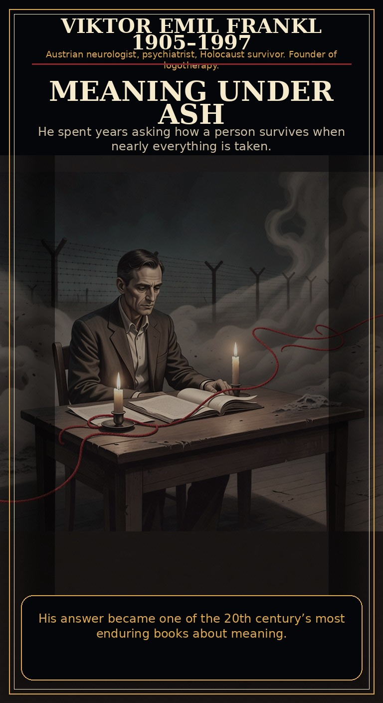
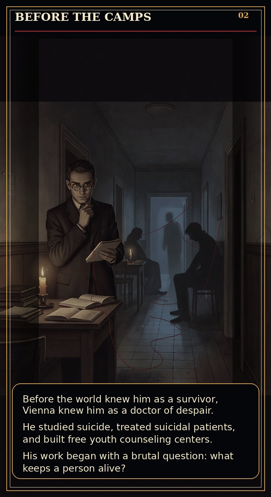
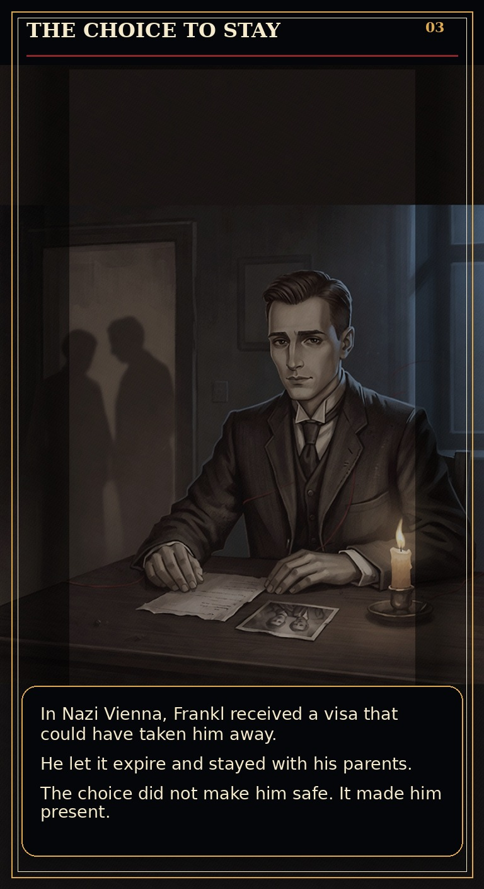
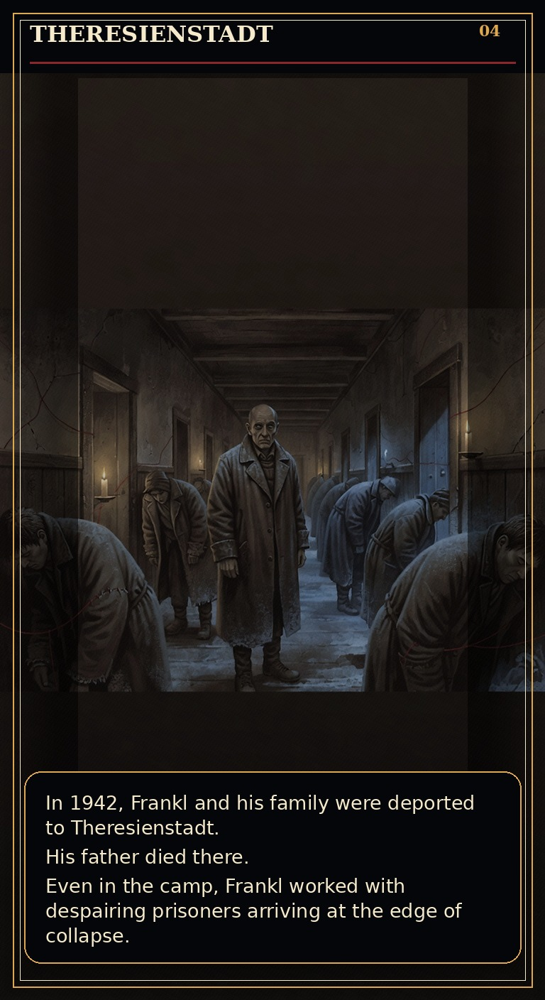
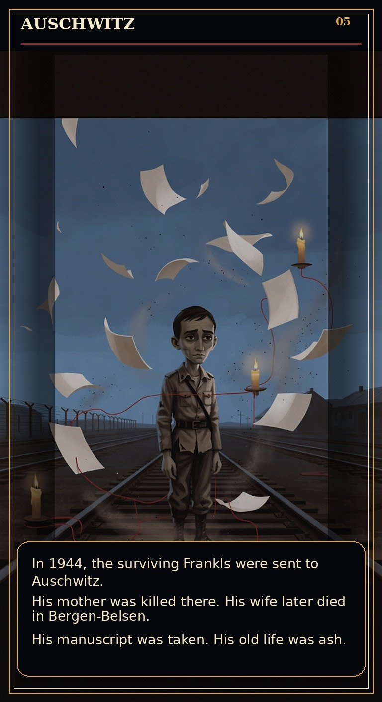
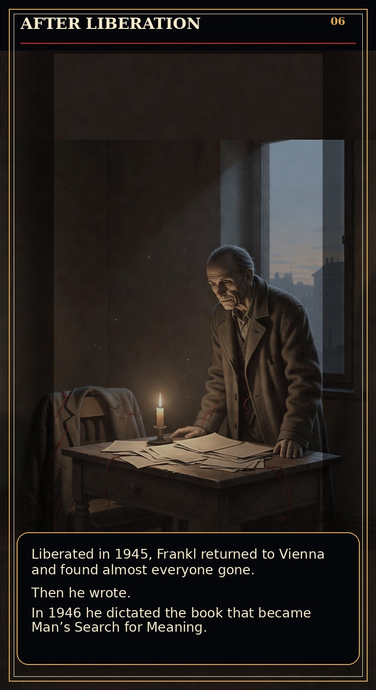
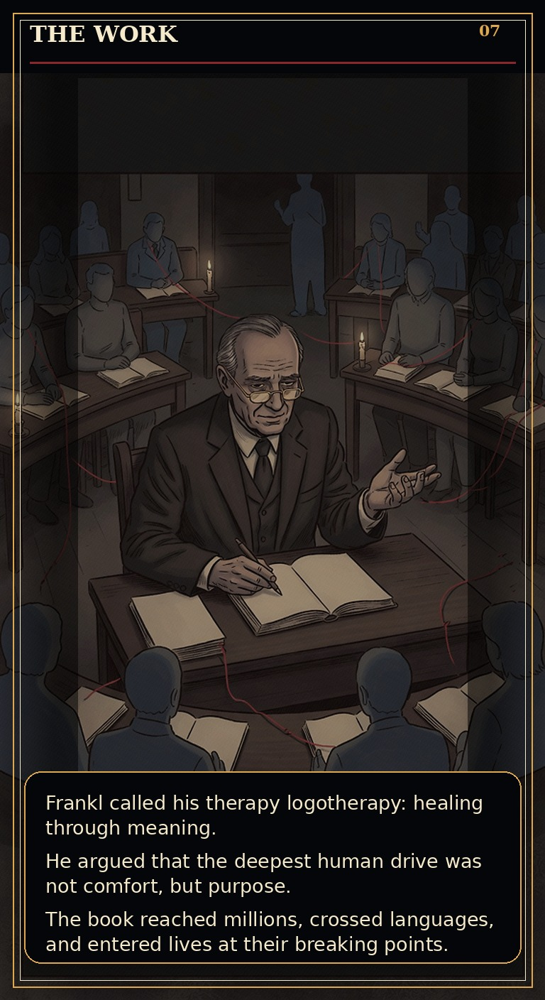
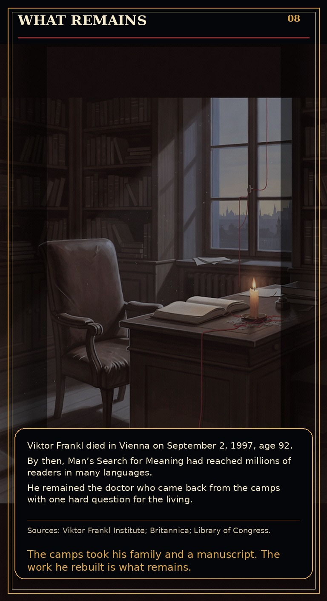

Help keep new obituary comics, source work, and reader tooling moving. Send ZEC to this shielded address:
u1cyxqx2za9c7g2h7tjz0nn7rdf5fgykmqgw4eke7fvfa9pd7lynjkqfeq4hzd3tkys4pvku5xnmmwclm77jv9ljkhdefrvzc6pgehc63rcnmylqlxt0fmz55t6wdp6dyk5w2hzx06hs93xun5smexvwn04ju4ppy54gx477ftequajh0t